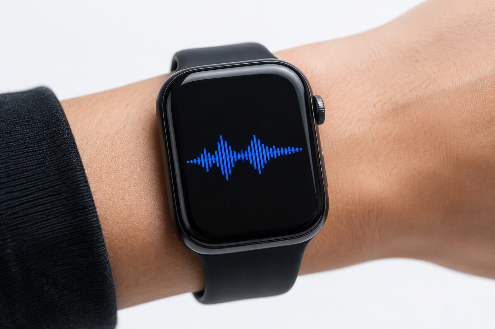
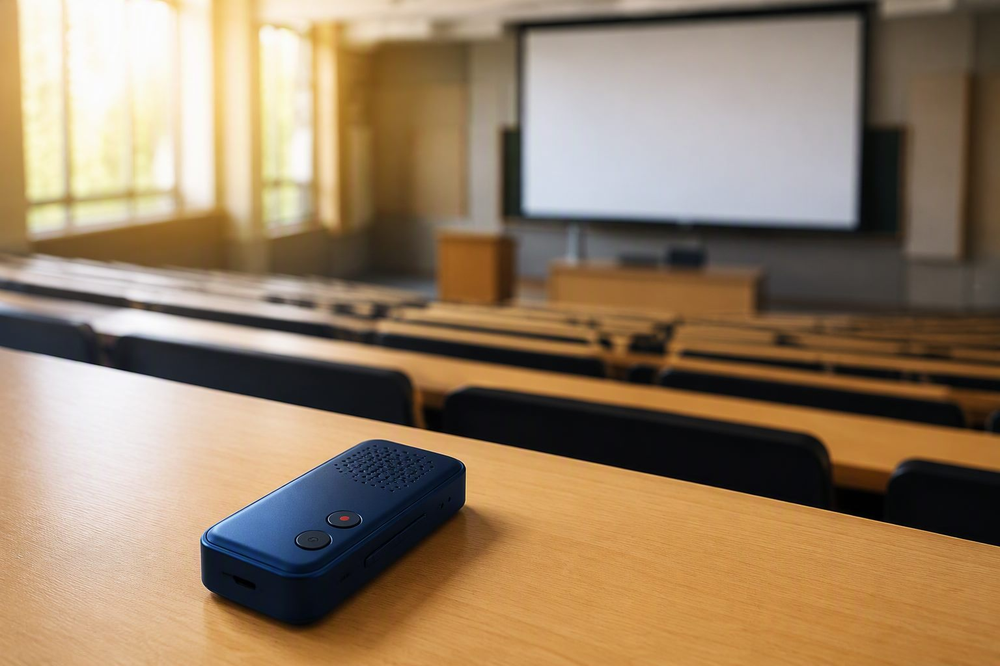

会议转写Meeting Transcription
MEET双麦/四麦阵列定向拾音，多人发言自动区分角色，会议结束即出纪要与待办，全程离线。Directional 2- or 4-mic capture, automatic speaker diarization, minutes and action items the moment the meeting ends — fully offline.
选型Source同一个声学引擎，在不同行业各司其职——每个场景都有成熟落地的方案与真实出货量。One acoustic engine, tuned per industry — every use case here ships in production today.
双麦/四麦阵列定向拾音，多人发言自动区分角色，会议结束即出纪要与待办，全程离线。Directional 2- or 4-mic capture, automatic speaker diarization, minutes and action items the moment the meeting ends — fully offline.
选型Source
课堂录音离线转写、重点自动标注，学生复习、家长辅导、老师反思都有据可依。Offline class transcription with auto key-point tagging — students review, parents coach, teachers reflect.
选型Source
门诊对话采集、本地 AES-256 加密存储，为医生整理病历初稿，数据不出设备。Clinic dialogue capture, on-device AES-256 encryption, drafting notes and freeing doctors' hands — data stays local.
选型Source
VX-200 低至 45mW，纽扣电池驱动的手表、胸卡、眼镜也能连续录音数小时。VX-200 sips 45mW, so watches, badges and glasses run hours of recording on a coin cell.
选型Source录音 + 转写 + 翻译三合一，四语离线互译，外语课堂与商务差旅随身可用。Record, transcribe and translate in one — offline 4-language translation for language class and business travel.
选型Source行车对话与调度语音自动记录转写，环境自适应降噪，宽温工作稳定可靠。Drive-time dialogue and dispatch audio captured and transcribed, adaptive noise cancellation, wide-temperature rated.
选型Source会议音箱内嵌四麦环形阵列模组：360° 拾音、声源定位、角色分离。支持单机离线转写，也支持局域网多机串接，纪要自动归档。A quad-mic ring module inside the meeting speaker: 360° capture, source localization, speaker diarization. Works standalone offline, or chained over LAN with auto-archived minutes.

学生课堂录音笔：上课按键即录，下课自动转写出重点段落。校园无网环境也能完整工作，隐私不出设备。Student recorders: press to record in class, auto-transcribe key passages after class. Works fully in campus no-Wi-Fi zones; privacy stays on-device.
把场景发给我们，看看这颗芯片能为你的产品带来什么。Send us your use case — see what this chip can do for your product.
留下需求，销售工程师 24 小时内回复